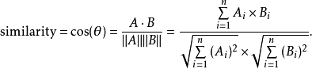
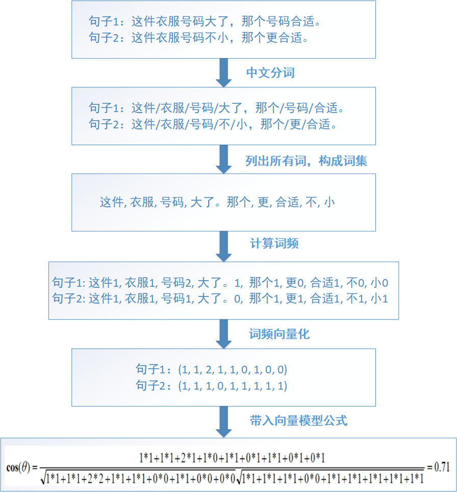
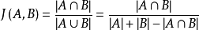
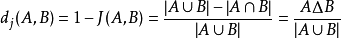
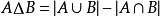
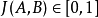

如何对比两个文本的相似度，这里记录几个简单计算文本距离的方法。
规定，结果为0-1的浮点数，0为完全不相关，1为完全正相关
分词
使用 jieba.cut 等工具对文本进行分词处理，获得到两个字符串序列。
1 | import jieba |
共有词比率
比较简单的算法就是看两句话中相同的汉字数，如果有较多的相同汉字，则认为它们是比较相似的。
1 | def similartiy_rate(seq1, seq2): |
编辑距离
编辑距离（Edit Distance），又称Levenshtein距离，是指两个字串之间，由一个转成另一个所需的最少编辑操作次数。编辑操作包括将一个字符替换成另一个字符，插入一个字符，删除一个字符。一般来说，编辑距离越小，两个串的相似度越大。由俄罗斯科学家Vladimir Levenshtein 在1965年提出这个概念。
例如将abcdef转换为abcdgh,需要改变两个字符(ef->gh)，所以编辑距离就是2
然后拿编辑距离去除以两者之间的最大长度，2/6≈0.333，意味着只要变动这么多就可以从A变成B，所以不用变动的字符便代表了相似度，1-0.333＝0.667。
参数 method：
1:序列间对齐最短长度的序列
2:序列间对齐最长长度的序列
1 | from array import array |
余弦相似度
余弦相似度度是常用的计算距离的公式，通常用来比较文本的相似性
首先看一下公式

基本步骤：

1.通过中文分词，把完整的句子根据分词算法分为独立的词集合
2.求出两个词集合的并集(词包)
3.计算各自词集的词频并把词频向量化
4.带入向量计算模型就可以求出文本相似度
5.套用余弦函数计量两个句子的相似度。
1 | # 统计每个元素出现的次数 |
汉明距离
汉明距离是使用在数据传输差错控制编码里的，它表示两个（相同长度）字对应位不同的数量，我们以d(x,y)表示两个字x,y之间的汉明距离。对两个字符串进行异或运算，并统计结果为1的个数，那么这个数就是汉明距离。
1 | # 汉明距离 |
Jaccard系数
定义
给定两个集合A,B，Jaccard 系数定义为A与B交集的大小与A与B并集的大小的比值，定义如下：

当集合A，B都为空时，J(A,B)定义为1。
与Jaccard 系数相关的指标叫做Jaccard 距离，用于描述集合之间的不相似度。Jaccard 距离越大，样本相似度越低。公式定义如下：

其中对参差（symmetric difference） 
性质

1 | # 杰卡德系数 |
Dice系数
Dice 系数可以计算两个字符串的相似度：Dice（s1,s2）=2*comm(s1,s2)/(leng(s1)+leng(s2))。
其中，comm (s1,s2)是s1、s2 中相同字符的个数leng(s1)，leng(s2)是字符串s1、s2 的长度。
Dice 系数是一种集合相似度度量函数，与相似度指数相同，也被称为系数，形式上也和杰卡德系数没有多大区别，但还是有些不同的性质。
1 | # Dice系数 |
总结
简单的几个计算文本相似度的方法就是这些了，常用的为余弦相似度，稍复杂的可以尝试多个算法的叠加，例如还有欧几里得距离，曼哈顿距离，SimHash等方法可以计算文本之间的相似度。7